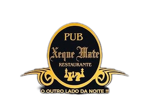
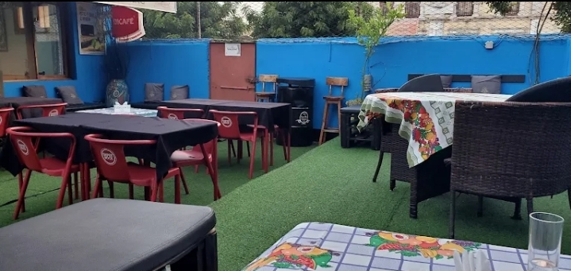

Onde a tradição encontra a modernidade em cada jogada
Fundado em 2018, o Restaurante & Pub Xeque-Mate nasceu da paixão pela boa gastronomia e pelo ambiente acolhedor. Localizado no coração de Quelimane, na movimentada Av. Samora Machel, nosso espaço foi pensado para ser mais que um simples restaurante - queremos ser o ponto de encontro da cidade.
O nome "Xeque-Mate" representa nossa filosofia: cada prato é uma jogada estratégica, combinando ingredientes frescos com técnicas refinadas para oferecer uma experiência única aos nossos clientes.
Hoje, somos referência em Quelimane, atendendo centenas de clientes satisfeitos que nos avaliam com 3.9 estrelas no Google e nos escolhem para momentos especiais, happy hours e confraternizações.

Oferecer uma experiência gastronômica memorável, combinando sabores regionais e internacionais com atendimento de excelência.
Ser o restaurante e pub preferido de Quelimane, reconhecido pela qualidade, inovação e ambiente único.
Qualidade, hospitalidade, responsabilidade e paixão pelo que fazemos.
Estacionamento, entrada e WC adaptados para pessoas com mobilidade reduzida.
Ambiente animado com apresentações musicais regulares.
Ambiente aconchegante com lareira para momentos especiais.
Transmissão de jogos e eventos desportivos ao vivo.
Pratos vegetarianos, veganos e opções sem glúten disponíveis.
Sala de jantar privada para eventos e confraternizações.
Somos um time de profissionais apaixonados por gastronomia e atendimento. Nossos chefs preparam cada prato com dedicação, enquanto nossa equipe de salão garante que sua experiência seja perfeita.